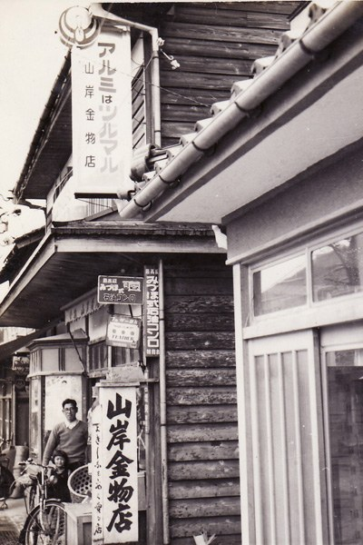

COMPANY
会社概要
1900年創業。石川県・福井県で
ホームセンターとリフォームを営んでいます。
- 1900年創業 明治33年、畳表づくりから
- 11店舗 石川県・福井県
- 500名 従業員数
- 133億円 年商（令和7年1月期）
ヤマキシは、地元でホームセンターを営んでいる会社です。
燃料の配達で給湯器や水まわりの修理をするうちに、
「もっと気軽にリフォームを頼めるように」という思いから、
2013年にリフォーム事業を始めました。
工事のあとも、お店がすぐ近くにあります。
会社の概要
| 会社名 | 株式会社山岸（ヤマキシ） |
|---|---|
| 代表者 | 代表取締役 山岸 信治 |
| 本社 | 〒919-0628 福井県あわら市大溝1丁目8番13号 |
| 電話番号 | 0776-73-1015 |
| 創業 | 1900年（明治33年） |
| 設立 | 1988年2月 |
| 資本金 | 3,000万円 |
| 年商 | 133億7,300万円（令和7年1月期） |
| 従業員数 | 500名 |
| 事業内容 | リフォーム事業／ホームセンター事業／燃料事業／クリーンエネルギー事業／インターネット通販事業／移動スーパー事業 |
| 関連会社 | 株式会社ヤマキシ不動産 |
| 建設業許可 | 2012年取得※許可番号は準備中です |
決算報告（税引前当期純利益）など、経営に関するくわしい情報は コーポレートサイトに公開しています。
リフォームの窓口
石川県・福井県に11店舗。お近くのお店からおよそ30分以内でお伺いします。
石川県 （8店舗）
- 田鶴浜店
- 羽咋店
- 金沢田上店
- 金沢野々市店
- 東金沢店（2026年10月オープン予定）
- 川北店
- 小松店
- 新加賀店
福井県 （3店舗）
- 金津店（本社）
- 開発店
- 朝日店
会社のあゆみ

- 1900年 先々代 山岸竹次郎が畳表製造業を創業（明治33年ごろ）
- 1935年 山岸金物店を開店
-
1979年
あわら市春宮3丁目にて金物雑貨商を営む
本店を郊外型店舗としてあわら市新用に移転 - 1981年 株式会社山岸を設立
- 1985年 ホームセンターヤマキシ加賀店を開店
- 1987年 ホームセンターヤマキシ小松店を開店
- 1991年 ホームセンターヤマキシ野々市店を開店
- 1993年 金津店（本店）を改装・増床
- 1994年 ホームセンターヤマキシ開発店を開店
- 2000年 当社初の大型店舗、ホームセンターヤマキシ田鶴浜店を開店（延床面積14,000㎡）
- 2003年 大型店舗2号店、スーパーホームセンターヤマキシ朝日店を開店（延床面積18,292㎡）
- 2007年 インターネット通販事業部を創設（楽天市場店を開店）
- 2008年 大型店舗3号店、スーパーホームセンターヤマキシ川北店を開店（延床面積15,526㎡）
- 2009年 クリーンエネルギー推進室を創設（太陽光発電・オール電化の販売施工を開始）
- 2010年 ネットスーパー事業部を創設
-
2012年
川北店の屋根に約1,000kwのメガソーラーを建設し、売電事業を開始
建設業許可を取得し、産業用の大型太陽光発電の施工販売を強化 -
2013年
田鶴浜店・朝日店の各屋根に1,000kwのメガソーラーを建設し、売電事業を開始
リフォーム事業を開始 - 2014年 地上設置型メガソーラー「坪江太陽光発電所」（2,000kw）の運転を開始
- 2017年 大型店舗4号店、スーパーホームセンターヤマキシ新加賀店を開店
- 2019年 リフォーム専門店として、リフォームヤマキシ野々市店を開店
- 2020年 移動スーパー事業部を創設
- 2022年 リフォーム専門店2号店として、リフォームヤマキシ小松店を開店
-
2023年
株式会社ヤマキシ不動産を設立
リフォーム専門店3号店として、リフォームヤマキシ羽咋店を開店 - 2024年 エコキュート＆外壁塗装リフォームの専門店として、ヤマキシ金沢田上店を開店
- 2026年 リフォームヤマキシ東金沢店を開店予定（2026年10月31日）

まずは、お困りごとから
見積り・現地調査は無料です。しつこい営業は一切いたしません。
「いくらかかるか知りたいだけ」でも歓迎です。